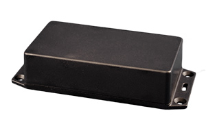

Project template containing the recommended board layout for Hammond Manufacturing 1591XXS:
Translucent - Blue: 1591XXSTBU - HM3992-ND
Black: 1591XXSSFLBK - HM1547-ND
Black: 1591XXSSBK - HM1546-ND
Gray: 1591XXSGY - HM3991-ND
Gray: 1591XXSFLGY - HM3990-ND
Black: 1591XXSFLBK - HM2050-ND
Black: 1591XXSBK - HM1545-ND
|  |
The "Dwgs.User" layer contains all critical dimmensions in milimeters[inches].
The "Edge.Cuts" layer contains the maximum board outline and holes to align with board standoffs.
PCB Preview: